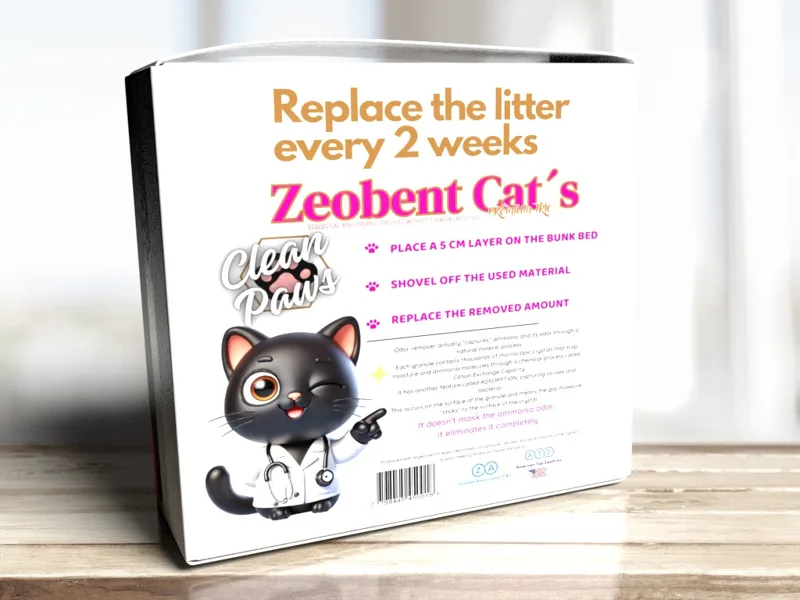

Su gato merece lo mejor. Su familia, también.
Zeobent Cat’s Premium Trio es una piedra sanitaria hiperaglutinante, libre de polvo e hipoalergénica, con clinoptilolita y bentonita en una fórmula exclusiva.
- Hiperaglutinante
- Libre de polvo
- Hipoalergénica
- Con trazabilidad

Lo que nos diferencia
Características que distinguen a Zeobent Cat’s de la piedra sanitaria común.
El gránulo por dentro
Toque cada componente para ver qué aporta.
Captura real del amoníaco. Cada gránulo contiene cristales microscópicos que atrapan las moléculas de la humedad y del amoníaco mediante la Capacidad de Intercambio Catiónico, un proceso mineral natural.
Aglutinante de máximo poder. Forma bloques firmes con los residuos, que se retiran fácilmente con la pala y mantienen limpia la bandeja.
Combinación propia de Zeobent Cat’s. Reúne minerales argentinos en una fórmula exclusiva, desarrollada y procesada en nuestra planta.
Producido con minerales argentinos: bentonitas, clinoptilolita (zeolitas) y diatomeas puras de máxima calidad, cumpliendo las normas del mercado americano.
Cómo elimina el olor
- AbsorbeLa humedad queda retenida en el gránulo.
- CapturaLos cristales atrapan el amoníaco y su olor.
- AglutinaLos residuos forman un bloque firme, fácil de retirar.
Máxima calidad, a un precio accesible
Es un producto premium y, aun así, lo pensamos accesible para todos: saludable para la familia y para el medio ambiente.
Respaldo y trazabilidad
Cuenta con la aprobación de los más exigentes estándares de calidad de los Estados Unidos en prestaciones, cuidado de la salud y del medio ambiente.
Más que una piedra sanitaria
Un ecosistema de productos que acompaña el cuidado de su mascota.
Modo de uso en tres pasos
- Coloque una capa de 5 cm en la bandeja.
- Retire con la pala el material usado.
- Reponga la cantidad retirada.
